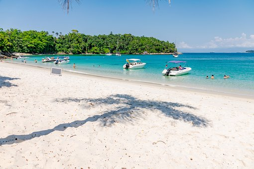

Who doesn't love discovering idyllic beaches around the world? Or relax and dive into clean, crystal clear waters? But with the increase of human presence and actions, many beaches are suffering from pollution, garbage, risks for marine life and, of course, for us too. Taking care of beaches is just part of the process to help save our oceans. This is because 80% of the garbage that reaches the seas comes from cities and travels a long distance to reach them. But it is a good start, and actions that we, individually, can take immediately. Let's do our part? See these tips below. They are as valid for your day to day as for when you are traveling. Are you already a fan of them? How about multiplying them?
awareness list
- avoid taking snacks in plastic bags
- take a recyclable garbage bag with you and dispose of all garbage in an appropriate place
- it also costs nothing to safely collect a piece of garbage or something else that you find next to you.
- if you're going for a walk, how about optimizing your exercise by plogging and picking up more junk?
- always have a reusable water bottle with you. Avoid disposables.
- don't throw anything in the sea and pee's place is in the bathroom!
- avoid cigarette. It is a major pollutant of our beaches. If you have a strong need to smoke, be prepared to dispose of it properly.
- help inspect your stallholder. Is he being responsible like you? How about giving him some tips?
- practicing healthy activities and encouraging friends to multiply their tips are also great requests!
As we do this we see the change in our photos
Before ↓
/i.s3.glbimg.com/v1/AUTH_59edd422c0c84a879bd37670ae4f538a/internal_photos/bs/2019/W/z/vBTWeITaqzVTVEfPgscw/lixo-praia.png)
Later ↓
